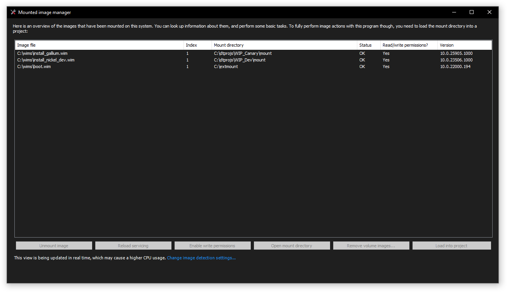
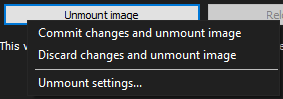

Mounted image manager

The mounted image manager allows you to manage your mounted images easily. You can perform the following tasks with this tool:
- Unmount a Windows image
- Reload the servicing session/repair the component store
- Enable write permissions of read-only mounted images
- Access the mount directory of an image
- Remove volume images (for images with multiple indexes)
- Load a mount directory to projects with no images loaded
DISMTools 0.3 introduces a command-line version of this tool. For more information, check its dedicated page.
Operations
Unmounting a Windows image
You can unmount a Windows image saving changes, discarding them, or with more settings; the last of which will open the image unmount dialog:

For read-only mounted images, clicking this button will directly unmount the image discarding changes. For more information, go to the image unmount page.
Reloading the servicing session/repairing the component store
Depending on the state of the mounted image, the program will let you do one task or the other.
- If its status is Needs remount, you will be able to reload the servicing session of the mounted image
- If its status is Invalid, you may be able to repair the component store of the mounted image. The ability you have depends on whether the image can be repaired or not. If it can't be repaired, your only choice is to discard it
Enabling write permissions
If you want to make changes to a read-only mounted image, you need to enable write permissions. This process will unmount the image and then mount it with write permissions. Do note that the image must be present in its location and must not be in read-only media in order for this process to complete successfully.
Accessing the mount directory
This will open the mount directory in File Explorer, allowing you to browse the files of the Windows image. This is similar to an active installation, so don't delete any files you don't know what they do.
Removing volume images
If the mounted image contains more than 1 index, you are able to remove volume images from it easily. Specify the indexes to remove, and click OK. For more information, refer to the volume image removal page.
Loading mounted images
If you've opened a project with no images loaded, you can easily load the mounted image you want to the project.